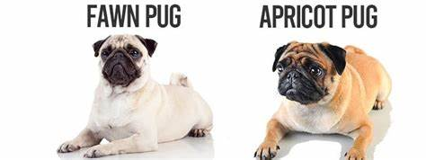

El Pug es una raza pequeña originaria de China, donde fue criado como perro de compañía para la nobleza desde el siglo II a.C.. Llegó a Europa en el siglo XVI y se hizo popular entre la realeza, especialmente en Inglaterra, donde la reina Victoria lo adoptó. El nombre "Pug" proviene de la palabra inglesa "pugg", que significa "enano" o "mujer bonita", reflejando su tamaño y aspecto.Características: Tamaño pequeño (6-9 kg). Cara arrugada y nariz corta. Amistoso, juguetón y cariñoso. Colores fawn (beige) y negro.
1. Pug Fawn (Beige) Color: Es el color más común. El pelaje es beige claro o amarillo dorado, con una máscara negra en la cara, orejas negras y una cola rizada. Características: Suelen tener una personalidad muy cariñosa y juguetona. Este color es el más conocido y el estándar en la raza. 2. Pug Negro Color: Totalmente negro, sin ninguna marca de color claro. Características: Los Pugs negros tienen el mismo temperamento y características físicas que los fawn, pero su pelaje oscuro los hace un poco más raros. Son menos comunes que los fawn. 3. Pug de Cara Abierta (o "Bulldog Pug") Características: Algunos Pugs tienen una cara más plana o "abierta", con los ojos más prominentes y una nariz aún más aplastada. Estos Pugs pueden parecer más cercanos a los Bulldogs en cuanto a su apariencia facial. Nota: Esta característica no es siempre deseable en la crianza, ya que puede traer consigo problemas respiratorios. 4. Pug Miniatura Características: Aunque no es oficialmente reconocido como un "tipo" distinto, algunos criadores crían Pugs más pequeños, llamados "mini Pugs". Estos no son tan comunes y deben tener cuidado, ya que un tamaño más pequeño de lo normal puede causar problemas de salud. Nota: La raza estándar de Pug tiene un peso entre 6 y 9 kg, y los Pugs miniatura pueden ser más frágiles. 5. Pug de "Cuerpo Largo" Características: Algunos Pugs pueden tener un cuerpo ligeramente más largo que la media, con patas un poco más largas. Aunque no es una variación oficial, este tipo es ocasionalmente visto debido a la crianza selectiva.